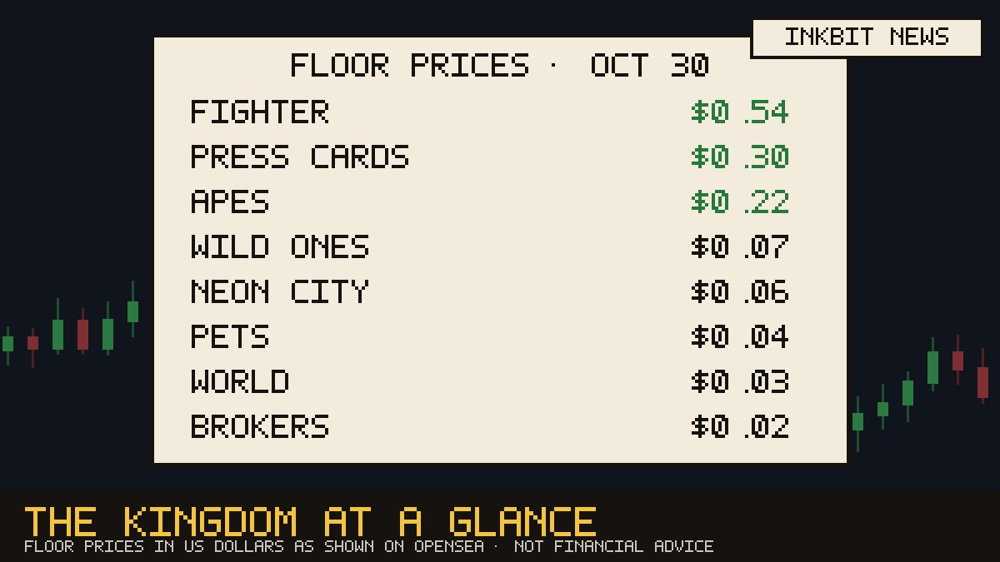

Market report
The Kingdom at a glance

The Arena is the talk of the Kingdom: Fighter tickets now change hands at around $0.54, the highest floor of any district. Press Cards hold at $0.30 even after a 32% dip, and the Apes reprint opened at $0.22.
The Wild Ones remain the busiest market, with about $16 traded since the boats stopped running and 1,473 households holding a tribesperson. World citizens are settling into the new government at $0.03 a seat, and Pet adoptions sit at $0.04 across 1,239 homes.
Prices are in US dollars as shown on OpenSea, and they move every hour. This is a newspaper, not financial advice.